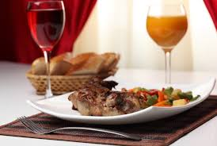
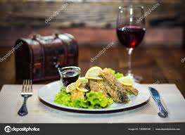
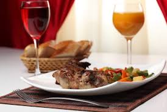
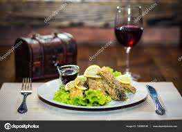

Carte
Plat de la semaine


repas1
repas2
repas3
repas4
repas5
repas6

repas7
repas8
repas9
On y mange, on y boit, on y danse

repas1
repas2
repas3
repas4
repas5
repas6

repas7
repas8
repas9
Apéritifs
Coupe de champagne 12 cl
Les vins au verre à partir de 4 €
Pastis 3 cl 4.50 €
Martini blanc, rouge 5 cl 5 €
Kir vin blanc 12 cl 4.50 €
Gin tonic 7 €
Bombay Sapphire Dry Gin 5 cl 7 €
Hendrick’s Gin 5cl 9 €
Américano 7 cl 8 €
Whiskies
Cardhu 12 ans (Speyside, single malt) 5cl 10 €
Maker’s Mark (Kentucky bourbon) 5 cl 12.50 €
Four Roses (Kentucky bourbon) 5 cl 6 €
Jameson (Irish whiskey) 5 cl 6.50 €
Ballantines 12 ans(blended malt) 5 cl 8.50 €
Aberlour 15 ans (Highland, single malt) 5 cl 9.50 €
Vins Blancs secs 12cl
« Viognier » Vin de Pays du Gard 4 €
Domaine du Vieux Lavoir
Afrique du Sud « Chenin blanc » (aoc ) 5 €
Oudekaap 2016
Crozes-Hermitage (aoc) 7.50 €
Domaine du Murinais « cuvée Marine » 2016
Pouilly-Fumé (aoc) 7.50 €
Domaine Jonathan Pabiot 2016
Châteauneuf du Pape (aoc) 8 €
Domaine de Pignan 2016
Plat
Hors-d’œuvres
À la nage
Tourteau de casier en fine gelée de navet
daïkon, écume de livèche et pince tiède
Délicatement enroulé
Poireaux de M. Riant cuits sur braises,
mousse de pommes de terre ratte,
sabayon au Marsala, truffe blanche
Doucement cuite au four
Courge Kabocha de M. Riant, quenelle glacée
sur crème de riz, olives et peaux croustillantes
Dans l’esprit Lasserre
Gratin de macaroni à l’artichaut
et à la truffe noire
À l’envi
Caviar Osciètre prestige,
blinis de blé noir
Plats de résistance
Confits au beurre noisette
Filets d’une sole épaisse péchée à Noirmoutier,
topinambours panés aux truffes
Poché doucement
Chair de blanc de turbot en son lait,
sauce de laitue asperge au caviar Osciètre
Au naturel
Omble chevalier et pommes de terre Belle de Fontenay
poudrées du cuir du poisson et de zestes de citron verts,
quenelle soufflée au coulis de cresson de Méréville
Rôtie au sautoir
Poularde de la Cour d’Armoise sur un lit de navets glaçons
fumés, bouillon lié au beurre de sarrasin et algue Kombu
Desserts
Foisonné à la minute
Chocolat du Pérou « 60% de cacao », sous de
fines feuilles à la fleur de sel
Confite au four
Banane dans sa peau sur fraîcheur de rhum,
écume de café et crème glacée épicée aux
éclats de noisette
Compotée et crue
Figues de M. Baud, cuisinées aux fruits rouges,
lait de chèvre dans une délicate gavotte
Dans l’esprit Lasserre
Crêpes Suzette, flambées à votre table
Short Drink
Dry Martini : Gin, Vermouth dry
Manhattan : Whiskey, Vermouth rouge, Angostura bitter
Red Lion : Gin, jus de citron, sirop de grenadine
Pink Lady : Gin, jus de citron, sirop de grenadine
Rusty Nail : Liqueur de stoch whisky, stotch whisky
Bourbon Old Fashioned : Bourbon, Angostura bitter, sucre, soda
Margarita : Téquila, Cointreau, jus de citron
Blue Lagoon : Vodka, Curaçao bleu, jus de citron
Cosmopolitain : Vodka, Cointreau, jus de cranberry, jus de citron vert
Ti’Punch : Rhum cubain, citron vert, cassonade
Caïpirinha : Cachaça, citron vert, cassonade
Caïpiroska : Vodka, citron vert, cassonade
Mojitos
Mojito : Rhum cubain, Angostura bitter, soda, menthe fraîche, citron vert, cassonade
Basil Mojito : un mojito au basilic fraîs
Raspberry Mojito : un mojito aux framboises fraîches
Strawberry Mojito : un mojito aux fraises fraîches
Apple Mojito : un mojito aux pommes fraîches
GIANT : parfum au choix, dans un grand verre, à partager !
Cocktails au Champagne
Négo Tradition : Champagne, purée de fraise
Cent cinquantenaire : Champagne, Grand Marnier, Chambord, jus de pamplemousse
1864 : Champagne, Amaretto, liqueur de fraise, jus d’ananas
Barbotage : Champagne, jus d’orange, sirop de grenadine
Bellini: Champagne, purée de pêche
Champagne Cocktail : Champagne, Cognac, Angostura bitter, sucre
Diamond Fizz : Champagne, Gin, jus de citron, sucre
Holiday : Champagne, Vodka grey Goose Poire, jus de citron, sucre, cannelle
Blueberry Night : Champagne, vodka, jus de citron, crème de myrtille
Pick Me Up : Champagne, Cognac, jus d’orange, sirop de grenadine